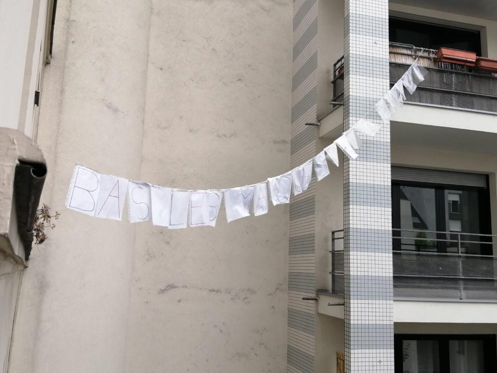
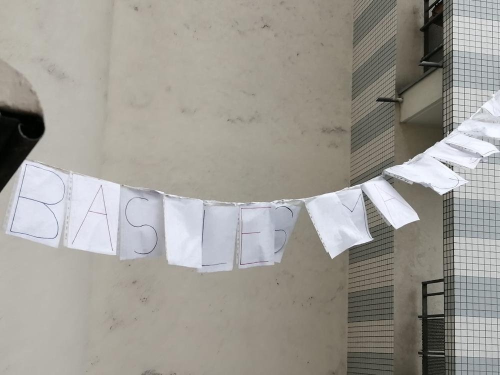

10 mai
La chanson de ce soir : Bella ciao
una mattina mi sono alzato
O bella ciao, bella ciao, bella ciao ciao ciao
una mattina mi sono alzato
E ho trovato l'invasor
O partigiano portami via
O bella ciao, bella ciao, bella ciao ciao ciao
O partigiano portami via
Ché mi sento di morir
E se io muoio da partigiano
O bella ciao, bella ciao, bella ciao ciao ciao
E se muoio da partigiano
Tu mi devi seppellir
E seppellire lassù in montagna
O bella ciao, bella ciao, bella ciao ciao ciao
E seppellire lassù in montagna
Sotto l'ombra di un bel fior
Tutte le genti che passeranno
O bella ciao, bella ciao, bella ciao ciao ciao
E le genti che passeranno
Mi diranno: che bel fior
E quest' è il fiore del partigiano
O bella ciao, bella ciao, bella ciao ciao ciao
Quest'è il fiore del partigiano
Morto per la libertà.
Les photos d'hier
Hier, nous avons chanté "Ma liberté" :
Et voici quelques photos de la nouvelle banderole :
 Si vous avez des vidéos, des photos, ou des enregistrements, n'hésitez pas à les envoyer à blogdesvoisins@gmail.com !